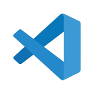

Pour pouvoir developper un site web, nous utilisons plusieurs outils:
En programmation web il existe 3 principaux langages
HTML signifie HyperText Markup Language. C'est une langue de balisage qui est utilisée pour structurer les pages web. Elle permet de définir la structure d'une page, en indiquant les différents éléments qui la composent, tels que les paragraphes, les titres, les liens, les tableaux, les images, etc.
CSS signifie Cascading Style Sheets. C'est une langue de feuille de style qui est utilisée pour définir l'apparence des pages web. Elle permet de contrôler les couleurs, les polices, la taille, l'alignement, le positionnement, etc. des éléments HTML.

JavaScript est un langage de programmation qui est utilisé pour ajouter des fonctionnalités dynamiques aux pages web. Il permet de créer des animations, des interactions avec l'utilisateur, des formulaires interactifs, etc.
Un éditeur de code est un logiciel qui permet de créer et de modifier du code source. Le code source est un ensemble d'instructions qui sont utilisées pour contrôler le comportement d'un programme informatique.

Visual Studio Code est un éditeur de code gratuit et open source développé par Microsoft. Il est disponible pour Windows, macOS et Linux.
Sublime Text est un éditeur de code payant développé par Sublime HQ LLC. Il est disponible pour Windows, macOS et Linux.

Notepad++ est un éditeur de texte gratuit et open source développé par Don Ho. Il est disponible pour Windows.
Un navigateur web est un logiciel qui permet de visualiser des pages web sur Internet. Il s'agit d'un programme informatique qui permet d'accéder aux ressources du World Wide Web, notamment des pages web, des images, des vidéos, etc.